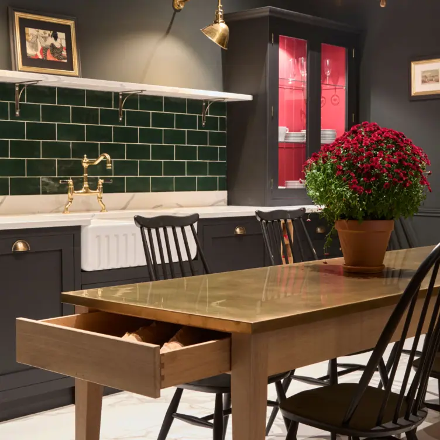
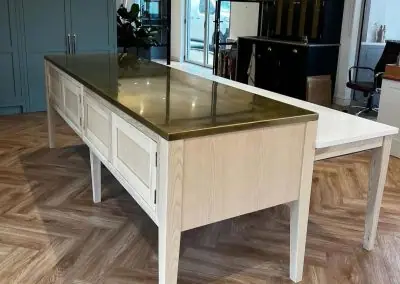
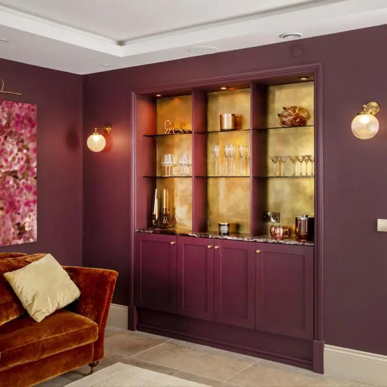
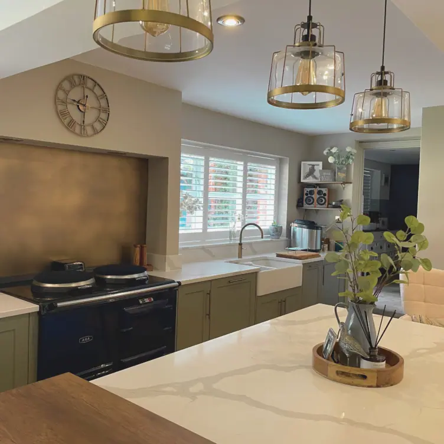
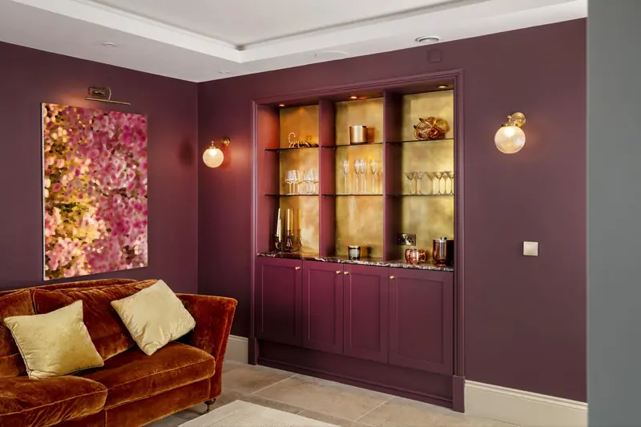

Berkshire Bronzed Brass
Lightly burnished, bronzed
This is a lightly burnished, antique-effect brass that we like to call our ‘bronzed brass’. Inspired by Windsor Castle and the sunlit Lambourn Downs, it’s a bright, timeless style. Berkshire is suitable for anywhere you’re looking for that elegant, antique look. It lends itself especially well to tabletops and bars.
We hand-age high-quality brass in our workshop, then refinish with a stunning polish that gives you a glimpse of the aged effect beneath. Once we have achieved the look you’ve envisaged, we seal with our ultra-protective ceramic finish.
Made for you in Berkshire Bronzed Brass
Berkshire Bronzed Brass in people’s homes







If you can dream it, we’ll make it.
Bars, balustrades, staircases, worktops, cladding and pieces that don’t have a name yet. Our designers and craftspeople work in brass, copper, zinc and steel, and alongside wood.